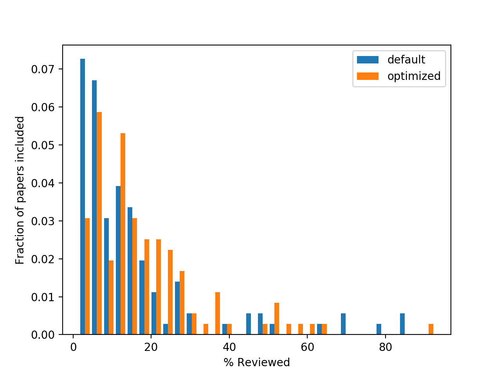
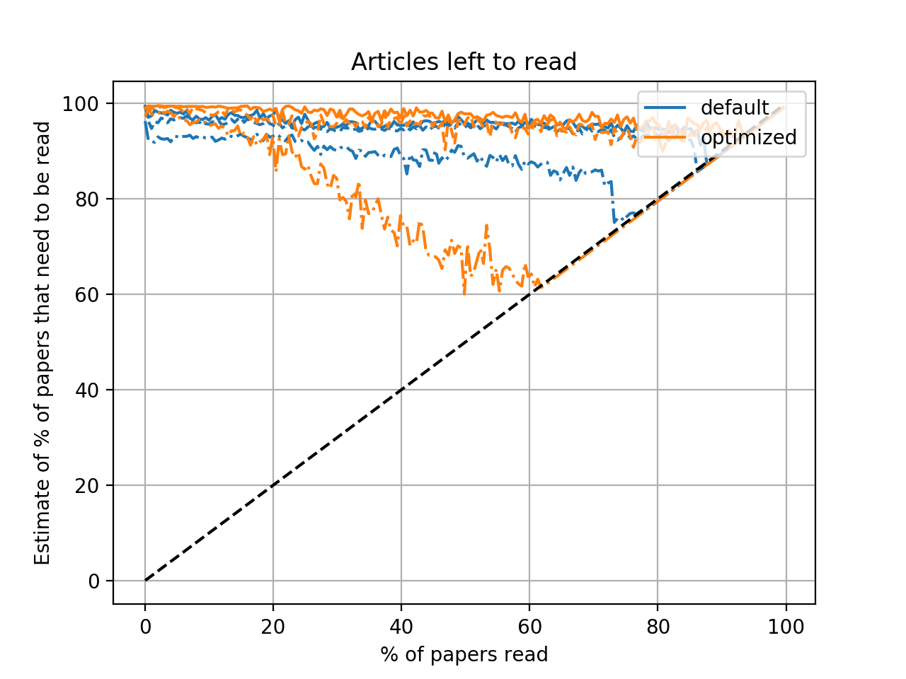
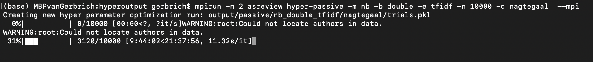
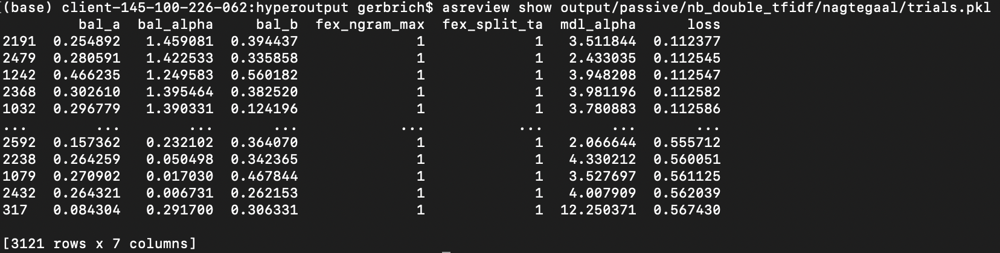

Chapter 5 My first simulation
5.1 Methods
A simulation study was performed on the Nagtegaal dataset, using a model with the following configurations:
- Model = Naive Bayes
- Query Strategy = max_random
- Balance Strategy = Double
- n_instances=10 (number of papers each query)
- n_papers=2000 (shouldn’t I do all?)
- n_prior_included = 5
- n_prior_excluded = 5
- mix_ratio = 0.95 (95% max, 5% random)
| Hyperparameters | default | optimized | ||
|---|---|---|---|---|
| Model | ||||
| alpha | 3.822 | 3.511844 | ||
| Balance | ||||
| a | 2.155 | 0.254892 | ||
| alpha | 0.94 | 1.459081 | ||
| b | 0.789 | 0.394437 | ||
| Feature | ||||
| ngram_max | 1 | 2 | ||
| split_ta | 0 | 1 |
For the sake of evaluating the optimized hyperparameters, two simulations of five runs each were compared: one with default hyperparameters and with optimized hyperparameters.
5.2 Results
Explanation of the plots come from the asreview-visualization repository.
The optimized hyperparameters do not perform better than the default ones, this is probably due to the fact that the default hyperparameters have already been optimized in the past. It is therefore to know for which models this has already been done and which not!
5.2.0.1 Inclusions
This figure shows the number/percentage of included papers found as a function of the number/percentage of papers reviewed. Initial included/excluded papers are subtracted so that the line always starts at (0,0).
The quicker the line goes to a 100%, the better the performance.

In the beginning, the model with default parameters finds inclusions quicker than the model with optimized hyperparamters. Only after reviewing 50% of the papers, the optimized hyperparameters outperform the default ones.
5.2.0.2 Discovery
This figure shows the distribution of the number of papers that have to be read before discovering each inclusion. Not every paper is equally hard to find.
The closer to the left, the better.

5.2.0.3 Limits
This figure shows how many papers need to be read with a given criterion. A criterion is expressed as “after reading y % of the papers, at most an average of z included papers have been not been seen by the reviewer, if he is using max sampling.”. Here, y is shown on the y-axis, while three values of z are plotted as three different lines with the same color. The three values for z are 0.1, 0.5 and 2.0.
The quicker the lines touch the black (y=x) line, the better.

5.3 Console output
3120 iterations ran overnight.
 2191 was best performing with a loss of 0.1124

5.4 Notes
Optimizing the hyperparameters with the Nagtegaal set and then running a simulation on the Nagtegaal dataset is using the data twice. This leads to overfitting. A next approach could be to perform some way of cross-validation, e.g. split the datasets in train and test datasets.
There are two main optimization modes: passive and active learning. The first is used here and is relatively fast, the second is more computationally expensive.
Of primary interest is the comparison of different model configurations in predictive performance. A simulation study can be performed with all possible configurations using the default hyperparameters. The results could be used to select model configurations that could possibly benefit from hyperparameter sreening.
Second, we could investigate how much is to gain in predictive performance from optimizing the hyperparameters. For this, some cross-validation strategy should be used. Optimization can consist of two steps: first, optimization through passive learning can be performed, from which the best performing models can be selected for the second step: optimization through passive learning.
5.4.1 Possible Research Questions
- Which model configurations have good predictive performance?
- for what kind of data sets and under which circumstances?
- Does optimization of hyperparameters lead to substantial gain in predictive performance?
- How much and why?
- How do the hyperparameters relate to one another?
- What is the optimal way to tune the hyperparameters?
- to determine by cross-validation
- for example: optimize over a large number of datasets? or a different strategy?
- …
- …